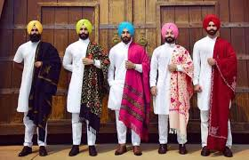

Pagadi is a traditional headgear for Punjabi men. It is also known as “Pag.” Pag is made of cotton and is comfortable to wear during summer. This remarkable fabric is tied on the head of Punjabi using a specialized winding technique. Sikh turbans are the ‘dastar’. A young Sikh boy ties a turban for the first time at the Sikh temple “Gurudwara.” This ceremony is called the Dastar/ Pagdi bandhi rite.The traditional costumes of Punjab are a blend of comfort, beauty, and excellent bright colors. Just like the awesome vibe of Punjab, their attire is equally beautiful and elegant. Whether it’s the iconic pagri or the jutti, every element adds a touch of tradition and heritage. Even with modern influences, Punjabi clothing continues to be a significant part of the state’s identity.One famous traditional Punjab outfit Punjab is a simple kurta and pajama. The kurta is a long piece of cloth worn until the knees, while the pyjama is a loose pant with a drawstring.